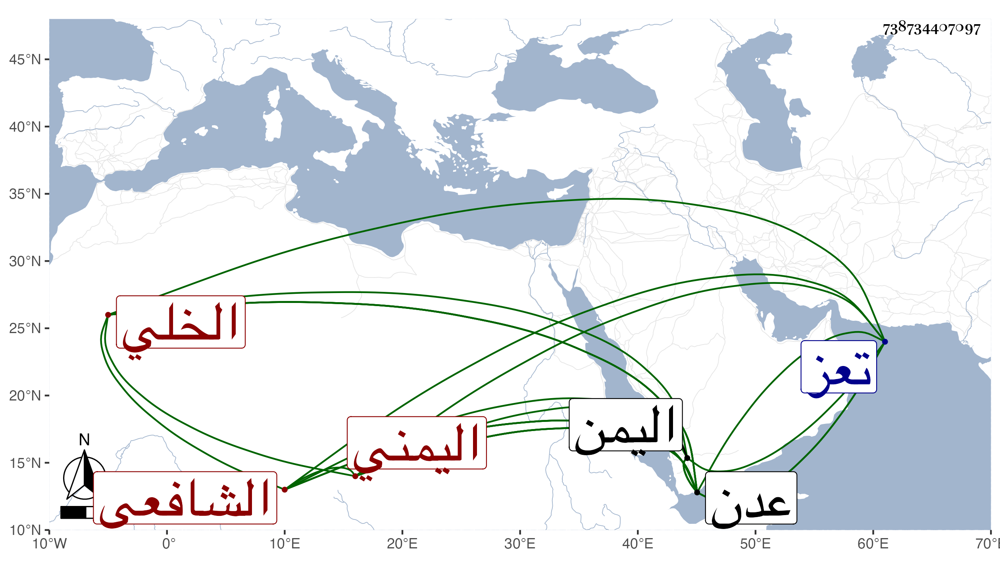

0902Sakhawi.DawLamic.ITO20230111-ara1.EIS1600.738734407097
Biography ID: 738734407097
529
عبد الصمد بن إسماعيل بن أحمد بن عمر عفيف الدين الخلي اليمني الشافعي . وخلة بفتح المعجمة قرية بالحجر من جبال اليمن . ولد في سنة ثلاث وثلاثين وثمانمائة وتفقه بجماعة منهم أبو حميش بفتح المهملة وكسر الميم وآخره معجمة قاضي عدن وقرأ في الفرائض وشارك في النحو وغيره ، وكان تقيا دينا خيرا استقر به علي بن طاهر في نظر ثغر عدن وأعمالها بحكم الوكالة في جميع تعلقاته فحمدت سيرته ولم ينفك عن المطالعة والنظر والمذاكرة مع الفضلاء والتحصيل لكتب العلم والبحث عن أحوال الفقهاء ثم قلده أيضا النظر في أوقاف تعز وغيرها فباشر ذلك أحسن مباشرة ولكن لم تطل مدته . ومات بعدن في رابع صفر سنة اثنتين وثمانين وكان له مشهد حافل شهده السلطان فمن دونه وتأسف الخيرون على فقده . أفاده لي بعض أصحابنا بأبسط من هذا .
